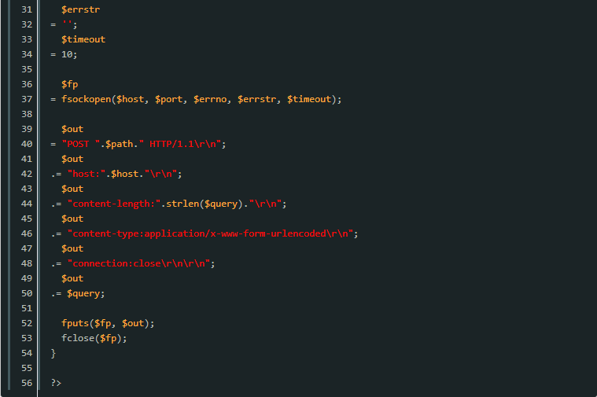

本文为大家讲述了php异步调用方法，分享给大家供大家参考，具体内容如下
客户端与服务器端是通过HTTP协议进行连接通讯，客户端发起请求，服务器端接收到请求后执行处理，并返回处理结果。
有时服务器需要执行很耗时的操作，这个操作的结果并不需要返回给客户端。但因为php是同步执行的，所以客户端需要等待服务处理完才可以进行下一步。
因此对于耗时的操作适合异步执行，服务器接收到请求后，处理完客户端需要的数据就返回，再异步在服务器执行耗时的操作。
1.使用Ajax 与 img 标记
原理，服务器返回的html中插入Ajax 代码或 img 标记，img的src为需要执行的程序。
优点：实现简单，服务端无需执行任何调用
缺点：在执行期间，浏览器会一直处于loading状态，因此这种方法并不算真正的异步调用。
2.使用popen
使用popen执行命令，语法：
优点：执行速度快
缺点：
1）.只能在本机执行
2）.不能传递大量参数
3）.访问量高时会创建很多进程
3.使用curl
设置curl的超时时间 CURLOPT_TIMEOUT 为1 （最小为1），因此客户端需要等待1秒
4.使用fsockopen
fsockopen是最好的，缺点是需要自己拼接header部分。

注意：当执行过程中，客户端连接断开或连接超时，都会有可能造成执行不完整，因此需要加上
以上是文章全部内容，有需要学习交流的友人请加入交流群的咱们一起，有问题一起交流，一起进步！前提是你是学技术的。感谢阅读！